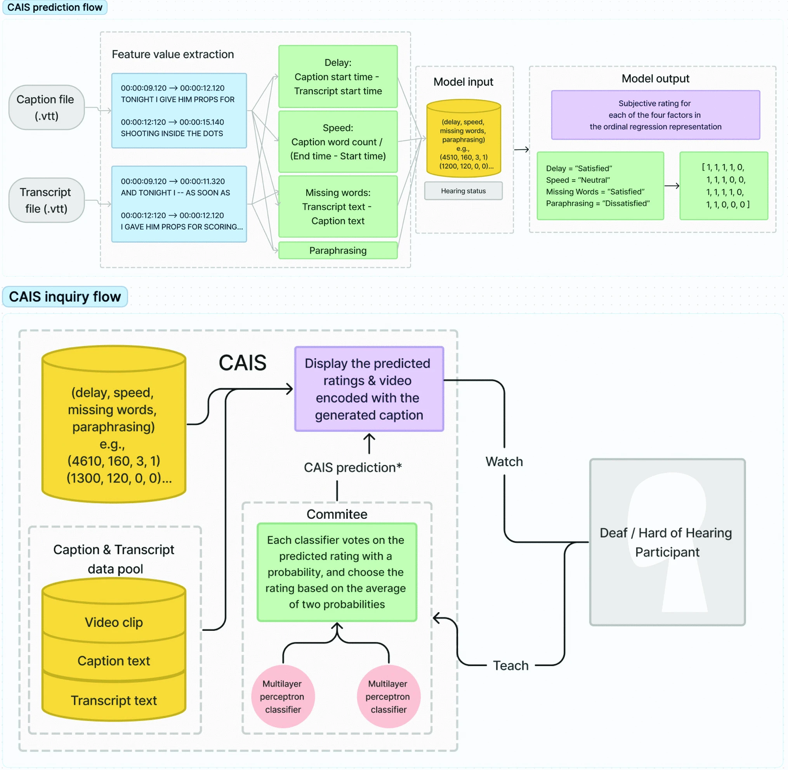
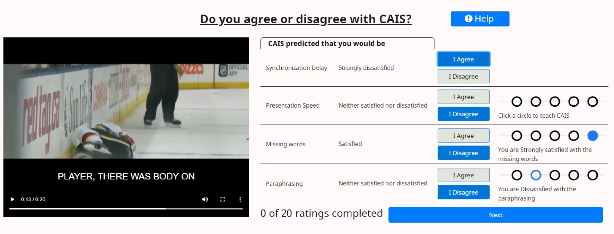
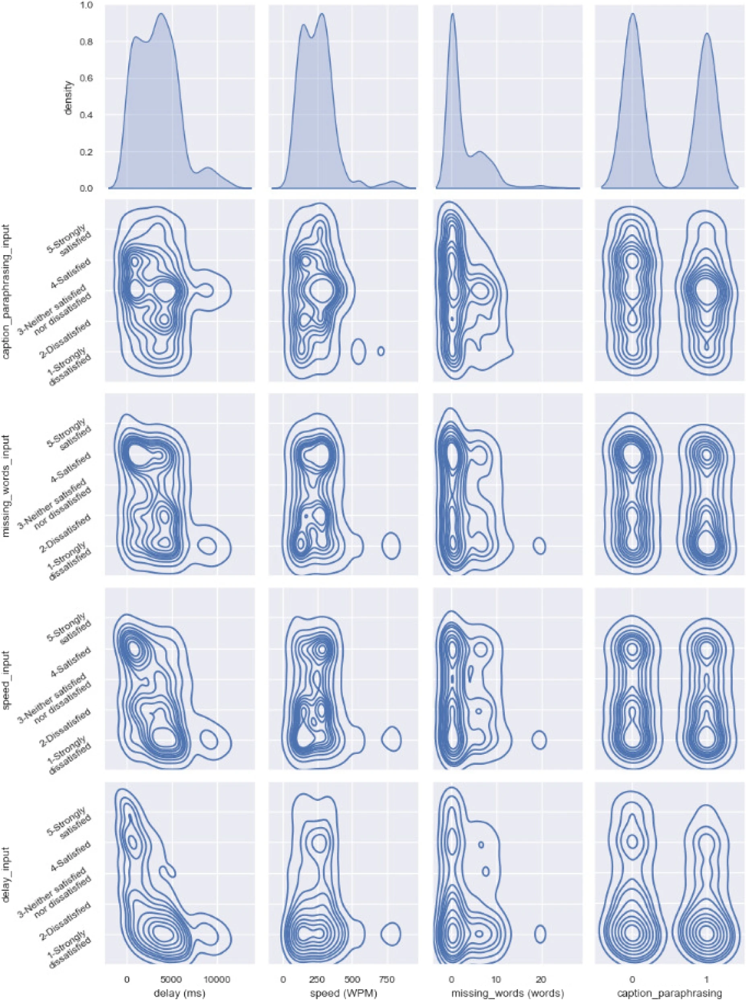
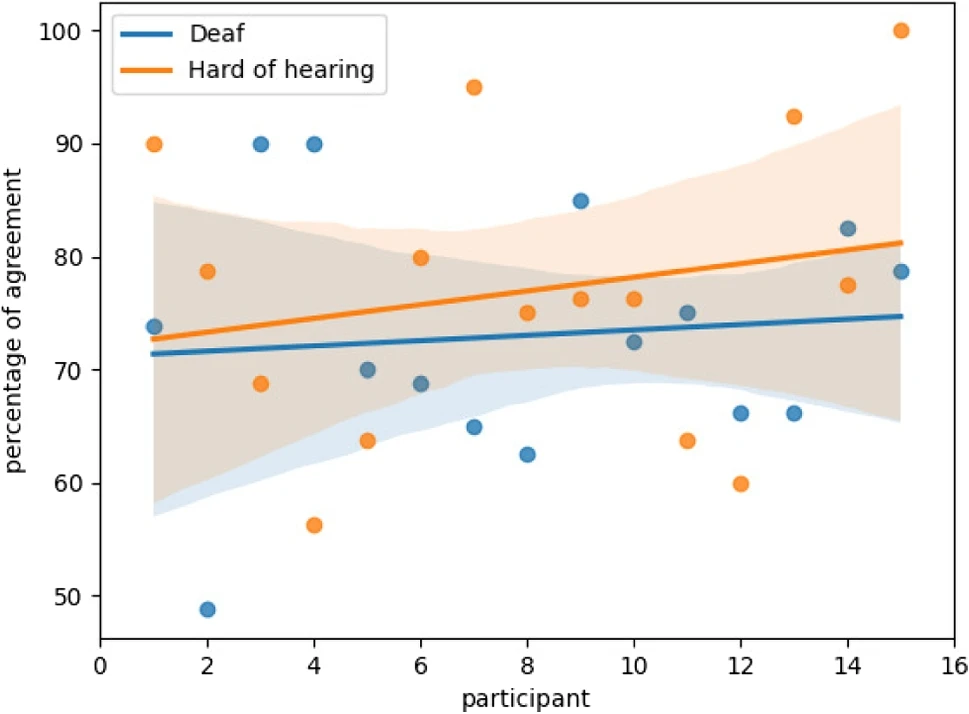

2023, Developing a closed captioning quality assessment system
Closed Captioning (CC) is a telecommunications service to display textual information equivalent to audio. Although the primary consumer group is Deaf (D) and Hard of Hearing (HOH) viewers, they are typically excluded from the quality assessment process. Including D and HOH viewers for all assessments is nearly impossible and requires enormous effort. To address this problem, an automated system called the Caption Quality Assessment Intelligent System (CAIS) was developed using machine learning algorithms to replicate human subjective evaluation.
1. System Overview of CAIS
CAIS uses a multi-label classifier trained with an active learning algorithm. The Multilayer Perceptron (MLP) structure processes four main caption error types: synchronization delay, presentation speed, number of missing words, and caption paraphrasing. An Active Learning strategy using Query by Committee (QBC) was used to fine tune the system and reduce the required number of training data points from real human assessors.

Figure 1. The system diagram of CAIS outlining the prediction flow and the active learning inquiry flow.
2. User Study and Methodology
An online user study was conducted with 15 Deaf and 15 Hard of Hearing participants who watched 20 video clips encoded with various caption errors. Participants indicated whether they agreed or disagreed with CAIS predicted quality ratings. When a participant agreed with the predicted rating, CAIS would learn the rating because it was confirmed by participants. In the case of disagreement, the participant was invited to provide CAIS with a new rating by clicking on a new quality label.

Figure 2. A screenshot of the user study web application displaying the video and the predicted ratings.
3. Results and Findings
The results revealed a positive rate of change in the percent agreement over time, showing that CAIS successfully learned from the viewers. Overall, participants had positive attitudes toward the machine predictions, particularly for the delay and speed factors.
- Participants mentioned how CAIS was capable of predicting how they perceived the quality of captions for the study clips.
- CAIS and participant input ratings had a consensus that when there was less delay, there was greater satisfaction.
- The independent t-test for the delay quality factor percent agreement between the two groups was significantly different.

Figure 3. A kernel density estimation graph between CAIS and human participants.

Figure 4. A linear trendline and scatter plots for the percentage of agreement between CAIS and human participants.